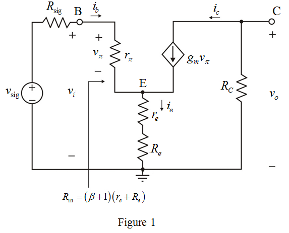
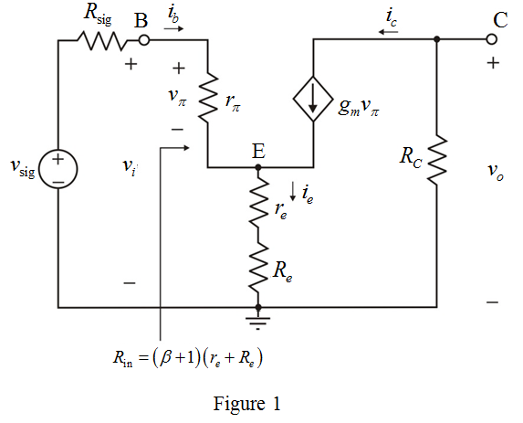

Draw the small-signal equivalent circuit for the common emitter (CE) amplifier with an emitter resistance .
.

Draw the small-signal equivalent circuit for the common emitter (CE) amplifier with an emitter resistance.

Write the expression for input-resistance of the amplifier.
Substitute for  in the equation.
in the equation.
Substitute  for
for  ,
,  for
for  and
and  for
for  in the equation.
in the equation.
…… (1)
Apply Kirchhoff’s voltage law to the left side loop in Figure 1.
Substitute for  in the equation.
in the equation.
Substitute for  in the equation.
in the equation.

Substitute  for
for  in the equation.
in the equation.
…… (2)
Substitute  for
for  ,
,  for ,
for ,  for
for  ,
,  for
for  ,
,  for
for  and
and  for
for  in equation (2).
in equation (2).
Thus, the value of bias current,  is .
is .
Determine the value of emitter resistance.
Substitute  for
for  in the equation.
in the equation.
Thus, the values of emitter resistance is,  and.
and.
Determine the value of overall voltage gain of the amplifier.

Substitute for , for , for ,  for
for  and
and  for
for  in the equation.
in the equation.
Thus, the value of overall voltage gain of the amplifier,  is, .
is, .
Determine the value of peak amplitude of the output signal.
Substitute  for
for  and for
and for  in the equation.
in the equation.

Thus, the value of peak amplitude of the output signal,  is .
is .